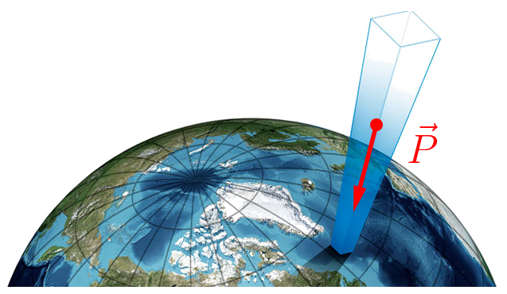
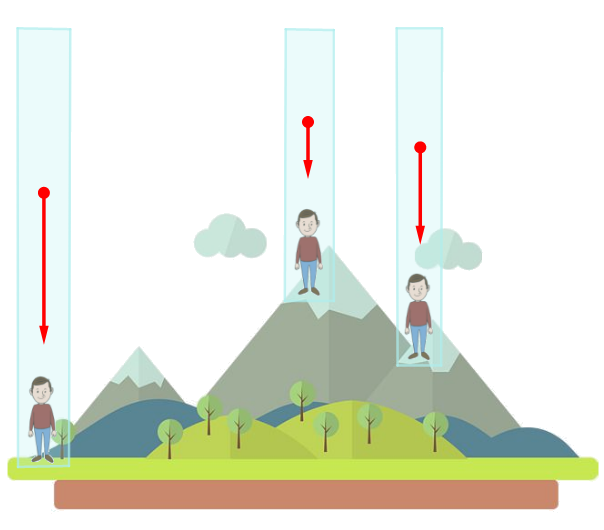
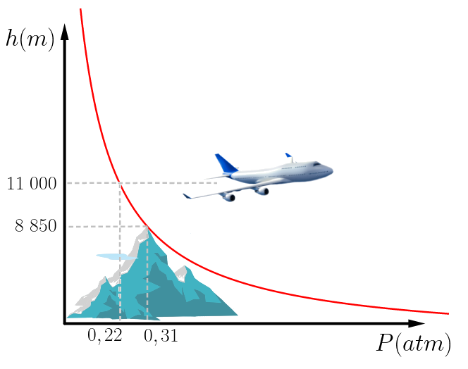
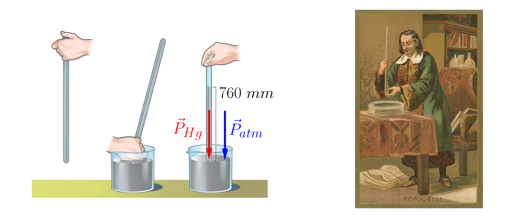

Aula5-33: Introdução à mecânica dos fluidos
Fluido
Chamamos de fluido o estado físico da matéria — normalmente líquido ou gás — em que a substância tem a capacidade de escoar, isto é, de fluir.
Massa específica da substância (densidade da substância) (μ)
A massa específica (ou densidade da substância) é a grandeza que indica a concentração de massa por unidade de volume ocupado pela substância. Ela é obtida pela fórmula abaixo:
|
Substância |
μ (g/cm3) |
μ (Kg/m3) |
|---|---|---|
|
Água |
1,00 |
1 000 |
|
Gelo |
0,91 |
910 |
|
Óleo mineral |
0,87 |
870 |
|
Alumínio |
2,70 |
2 700 |
|
Chumbo |
11,30 |
11 300 |
|
Espaço interestelar |
10-23 |
10-20 |
Densidade do corpo (d)
A densidade de um corpo é a grandeza que indica a concentração de massa por unidade de volume ocupado pela substância e pelos vazios que compõem o objeto. Ela difere da massa específica porque leva em conta, nesse caso, os vazios que compõem o corpo estudado. Obtemo-la pela fórmula abaixo:
Embora sejam parecidas, densidade e massa específica são grandezas diferentes. Ainda assim, segundo o SI, a unidade de medida de ambas é a mesma:
Pressão
Pressão é a grandeza física que indica a concentração de força que atua sobre uma determinada área. Ela é obtida pela fórmula a seguir:
A unidade de medida de pressão adotada pelo SI é:
Existem, porém, outras unidades de medida de uso recorrente, entre as quais se destacam a atm (atmosfera) e o mmHg (milímetro de mercúrio). Elas se relacionam assim:
Pressão atmosférica
“Vivemos ao fundo de um oceano de ar que, como mostra a experiência, certamente possui peso”.
– Evangelista Torricelli.

A frase acima, do físico e matemático italiano Evangelista Torricelli (★ 1608 — 1647 ✝), expressa bem a natureza do que chamamos pressão atmosférica: trata-se da pressão decorrente da força peso das camadas de gases que envolvem o planeta.
Ou seja, ao avaliarmos uma área na superfície da Terra, há ali uma força agindo: a força peso da coluna de gás que se estende do solo até a exosfera.

Disso decorre que a pressão atmosférica depende do ponto em que é medida: quanto mais elevado for o local, menor será o comprimento da coluna de ar e mais rarefeitos serão os gases que a compõem. Ou seja, a pressão atmosférica é inversamente proporcional à altitude do local. Veja uma tabela com valores para alguns lugares:
|
Localidade |
Altitude (m) |
Pressão (atm) |
|---|---|---|
|
Mar |
0 |
1,00 |
|
Uberlândia |
866 |
0,92 |
|
La Rinconada (Peru) |
5 000 |
0,54 |
|
Monte Everest (Nepal) |
8 850 |
0,31 |

A pressão atmosférica cai exponencialmente à medida que a altitude aumenta. No gráfico ao lado estão representados, com valores aproximados, a pressão no topo do monte Everest e a do voo de cruzeiro de um Boeing 747.
➔ EXPERIMENTO DE TORRICELLI
Para medir — e também demonstrar — a pressão atmosférica, Evangelista Torricelli propôs, em 1646, o seguinte experimento:
Há, primeiramente, uma bacia contendo mercúrio. Em seguida, um tubo repleto desse elemento é invertido dentro do recipiente, como mostra a figura abaixo. Parte do mercúrio escorre, de modo que o tubo permanece preenchido até a altura de 760 mm.

Explicação: a pressão atmosférica atua sobre o mercúrio da bacia, empurrando-o para baixo. Assim, a pressão exercida pela coluna de mercúrio de 760 mm sobre o mercúrio do recipiente é igual à pressão exercida pela atmosfera terrestre. (Na próxima aula, com o teorema de Stevin, entenderemos melhor como obter essa relação.)
Obs.: Se realizarmos esse experimento usando água em vez de mercúrio, a coluna de água necessária para equilibrar a pressão atmosférica mede cerca de 10 m de altura.
Segue-se, portanto, desse experimento a relação entre as unidades de medida mais convencionais para medir a pressão atmosférica:
1 atm = 760 mmHg.
O 19 de setembro de 1648...
Ao refletir sobre a causa da subida e do equilíbrio do mercúrio em tubos fechados, Blaise Pascal (★ 1623 — 1662 ✝) tomou conhecimento da opinião de Torricelli, que não hesitou em atribuir o fenômeno à pressão do ar. A ideia de que o ar tivesse peso dividiu a comunidade científica da época. Foi nesse contexto que Pascal, ajudado por seu cunhado Florin Périer, idealizou e executou um experimento que encerrou a questão.
Pascal pensava que, para resolver de vez o problema, bastaria comparar a altura do mercúrio no tubo de Torricelli ao pé e no cume de uma montanha. Se a coluna fosse menor no topo do que na base, a pressão do ar estaria demonstrada.
O monte escolhido foi o Puy-de-Dôme, com 1467 metros de altura. Em 19 de setembro de 1648, o experimento foi realizado e a tese de Torricelli foi confirmada.
Experimento de Magdeburgo
Em 1654, na cidade de Magdeburgo, Alemanha, Otto von Guericke (★ 1602 — 1686 ✝) usou uma de suas invenções, a bomba de vácuo, para retirar o ar do interior de uma esfera formada por dois hemisférios justapostos. Removido o ar, as hastes que mantinham as calotas unidas foram retiradas e, a partir daí, nada mais prendia os dois hemisférios além da diferença de pressão entre o meio interno e o externo. Para tentar separá-los, prenderam-se dois times de oito cavalos, um em cada hemisfério. Os cavalos tiveram grande dificuldade em apartá-los novamente.